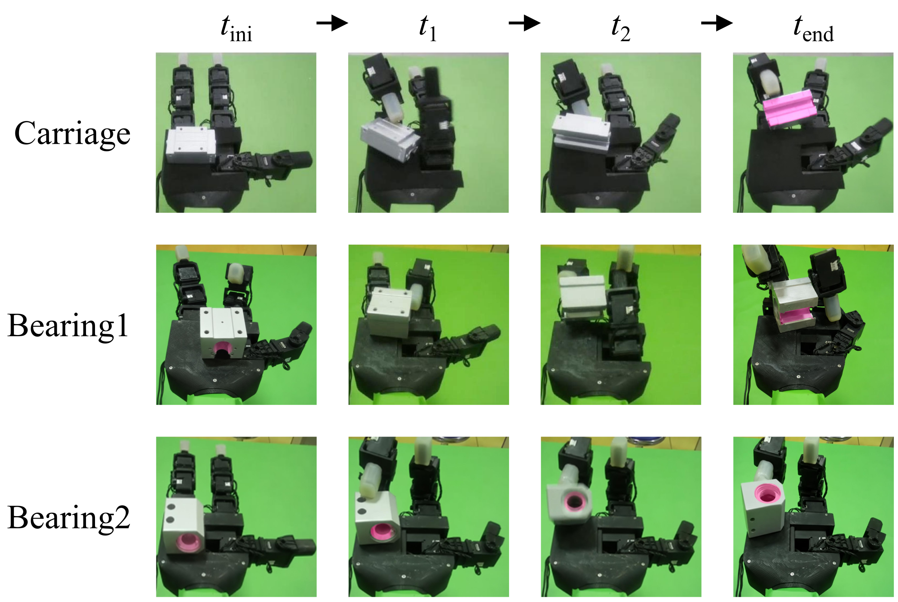
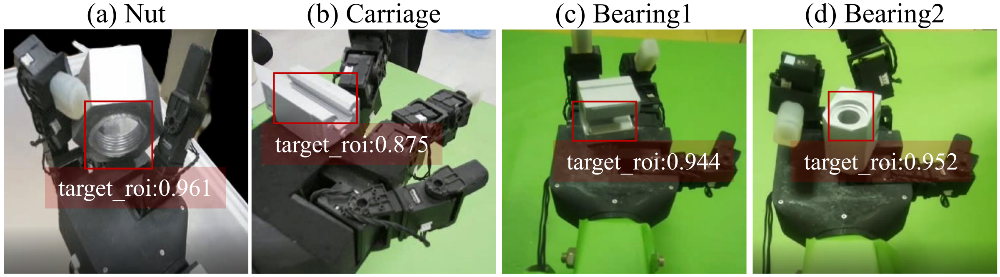

DRIA: Dexterous In-Hand Reorientation for Target ROI Image Acquisition of Complex-Shaped Industrial Parts
1School of Artificial Intelligence and Automation, Huazhong University of Science and Technology
2School of Mechanical Science and Engineering, Huazhong University of Science and Technology
3Belt and Road Joint Laboratory on Measurement and Control Technology, Huazhong University of Science and Technology
4Autonomous Intelligent Unmanned System Engineering Research Center, Ministry of Education of China, Huazhong University of Science and Technology
1,21037 Luoyu Road, Wuhan 430074, China
3,4Wuhan 430074, China
*Corresponding author: c_cheng@hust.edu.cn
Research Manuscript
Abstract
Automated visual inspection of complex-shaped industrial parts requires images of critical regions of interest (ROIs), such as internal threads and bearing bores, that are frequently occluded from fixed viewpoints. Existing automated optical inspection (AOI) systems can improve inspection coverage through multi-camera configurations or robot-guided viewpoint adjustment, but these approaches may increase hardware complexity or require additional viewpoint planning. This paper presents DRIA, a framework that instead employs a dexterous hand as an active part-presentation device, reorienting a grasped part until its target ROI is exposed to fixed RGB cameras. To enable RGB-only deployment without real-world demonstrations, a privileged reinforcement-learning (RL) teacher is trained in simulation, and its successful rollouts are converted into multi-view vision–action trajectories for training a vision-conditioned diffusion policy. During real-world deployment, a lightweight visual-alignment step reduces the appearance difference between simulated and real observations, allowing the policy to operate on RGB images alone, without depth sensing, object-pose estimation, or policy fine-tuning. In physical experiments involving 400 trials on four industrial parts, DRIA achieved a complete-task success rate of 65.5% and a target ROI exposure rate of 72.0%. In separate baseline comparisons, DRIA outperformed Action Chunking with Transformers (ACT), deterministic behavior cloning, and open-loop replay in both simulation (77.9% vs. 56.3%, 35.0%, and 23.2%) and physical experiments (68.8% vs. 48.8%, 28.8%, and 16.3%). These results demonstrate the feasibility of dexterous in-hand reorientation as a flexible image-acquisition strategy for automated part inspection.
Method

Instead of moving cameras around a stationary part, DRIA changes the pose of the grasped part to expose a predefined target ROI. A separate policy is trained for each part through three stages:
- Privileged teacher learning. A PPO teacher learns contact-rich in-hand reorientation in Isaac Gym using hand joint states, object pose and velocity, and a part-specific target orientation. The reward encourages orientation alignment while penalizing positional drift and abrupt joint commands.
- Simulation demonstration generation. Successful teacher rollouts are recorded as synchronized three-view RGB observations and 11-dimensional joint-position commands. The dataset contains 3,000 successful trajectories per part, or 12,000 in total, including a short holding phase at the target pose.
- Student learning and deployment. A ResNet18 encoder and conditional one-dimensional U-Net learn an action diffusion policy from simulation trajectories. At deployment, green-background pixels in real camera images are replaced with white to match the simulated appearance. The frozen policy executes action chunks at 15 Hz, without real-world demonstrations, depth sensing, object-pose estimation, or policy fine-tuning.
Results
The physical cell uses an 11-DoF, three-fingered GX11 hand and three fixed RGB cameras. Four parts are evaluated: a 3D-printed hex nut (Nut), an HGH15CA linear-rail carriage (Carriage), and SBR16UU and LHSSK16 bearing units (Bearing1 and Bearing2). Their target ROIs are the internal thread, rail groove, and bearing bores.
Can DRIA acquire target ROI images on the real platform?
- Across 400 physical trials (100 per part), DRIA achieves 65.5% complete-task success (262/400; 95% CI: 60.7–70.0%) and 72.0% target ROI exposure (288/400; 95% CI: 67.4–76.2%).
- Complete-task success requires the target orientation and a stable grasp at the end of the trial. ROI exposure counts a trial if the target region meets its presentation criterion in at least one camera frame while the part is still held.
- In 26 trials, the ROI was exposed before the part was later dropped, highlighting grasp stability as a remaining limitation.

How does DRIA compare with other action-generation methods?
- In simulation, DRIA achieves 77.9 ± 0.7% average success and a time-to-finish of 3.7 ± 0.5 s on successful episodes. It has the highest success rate among the evaluated methods that do not use privileged states, while the privileged RL teacher reaches 88.7 ± 0.7%.
- In a separate physical comparison with 80 new trials per method (20 per part), DRIA achieves 68.8% complete-task success and 73.8% ROI exposure.
| Method | Simulation success | Physical task success | Physical ROI exposure |
|---|---|---|---|
| Replay | 23.2 ± 1.2% | 16.3% | 20.0% |
| CNN-BC | 35.0 ± 0.7% | 28.8% | 31.3% |
| ACT | 56.3 ± 0.6% | 48.8% | 53.8% |
| DRIA (Ours) | 77.9 ± 0.7% | 68.8% | 73.8% |

What do diffusion modeling and multiple camera views contribute?
- Diffusion ablation: replacing deterministic CNN-BC regression with action diffusion raises simulation success from 35.0% to 77.9%, and physical complete-task success from 28.8% to 68.8%.
- Multi-view ablation: compared with the best single camera selected on validation data, three views raise average simulation success from 67.0% to 77.9% and reduce time-to-finish from 5.4 s to 3.7 s.
| Part | Single-view SR (%) | Three-view SR (%) | ΔSR (pp) | Single-view TTF (s) | Three-view TTF (s) |
|---|---|---|---|---|---|
| Nut | 65.3 ± 2.5 | 76.7 ± 1.5 | +11.3 | 5.2 ± 0.5 | 3.7 ± 0.5 |
| Carriage | 67.3 ± 2.1 | 79.0 ± 1.0 | +11.7 | 5.6 ± 0.5 | 3.6 ± 0.4 |
| Bearing1 | 70.3 ± 2.1 | 78.7 ± 1.5 | +8.3 | 4.9 ± 0.5 | 3.5 ± 0.4 |
| Bearing2 | 65.0 ± 3.0 | 77.3 ± 3.2 | +12.3 | 6.0 ± 0.7 | 4.1 ± 0.5 |
| Average | 67.0 | 77.9 | +10.9 | 5.4 | 3.7 |
Can the acquired images support automatic ROI localization?
- A Faster R-CNN detector trained only on simulation images achieves AP@0.5 = 0.940 and F1 = 0.885 on simulation validation images. It is used to evaluate the acquired images and does not control the hand.
- In a qualitative check of 60 real frames, it locates the ROI in all 55 ROI-visible frames but also produces false positives in all five ROI-absent frames. Reliable rejection of absent ROIs remains unresolved.

Scope and limitations. This feasibility study covers four small parts in a controlled cell, with one dedicated policy and one target ROI per part. Multi-ROI inspection, production variation, and defect-level visual assessment remain future work.
Supplementary Video
Nut recordings show the real and simulated camera observations alongside the physical setup. Additional nut clips compare the RL teacher and diffusion policy in simulation.
Nut: RL teacher and diffusion policy in simulation
BibTeX
@unpublished{sun2026dria,
title = {{DRIA}: Dexterous In-Hand Reorientation for Target {ROI} Image Acquisition of Complex-Shaped Industrial Parts},
author = {Sun, Xin and Wang, Shichuang and Deng, Linan and Hua, Feng and Liu, Xing and Cheng, Jun and Yang, Zhanpeng and Qiao, Xuechun and Cheng, Cheng},
note = {Research manuscript},
year = {2026}
}Acknowledgements
This work was supported in part by the National Science and Technology Major Project on Intelligent Manufacturing Systems and Robots (Grant No. 2025ZD1603003); and in part by the National Natural Science Foundation of China under Grant 62373160, Grant 62503184, and Grant T2525012.